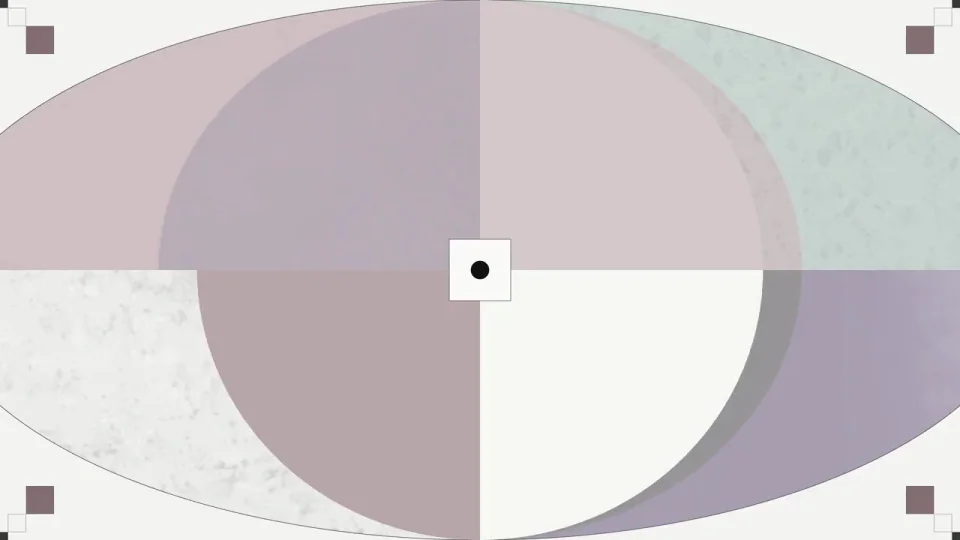
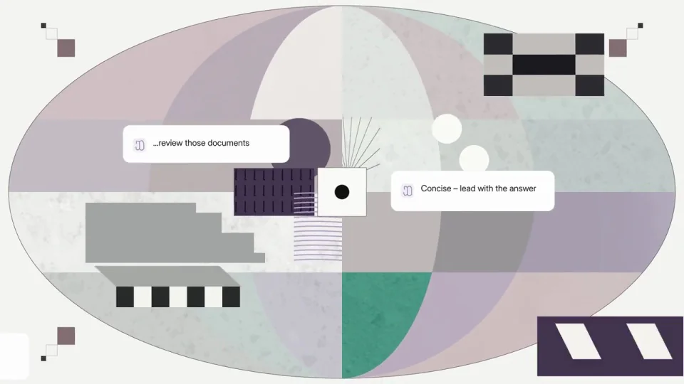
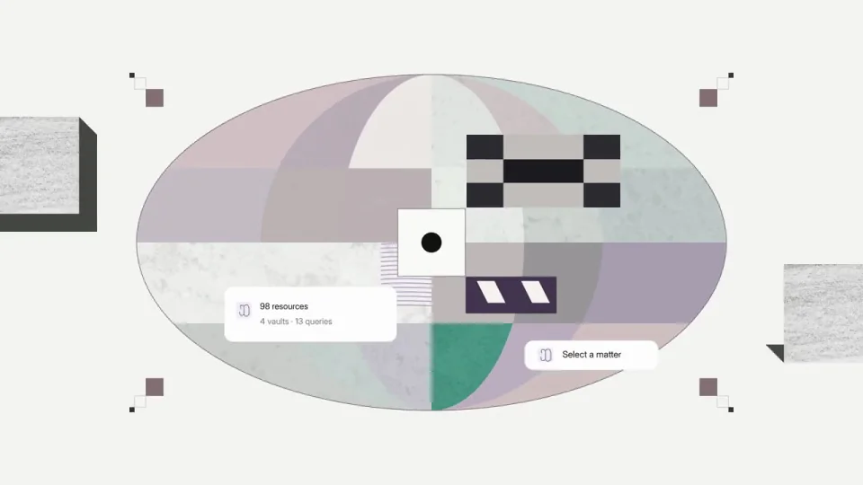
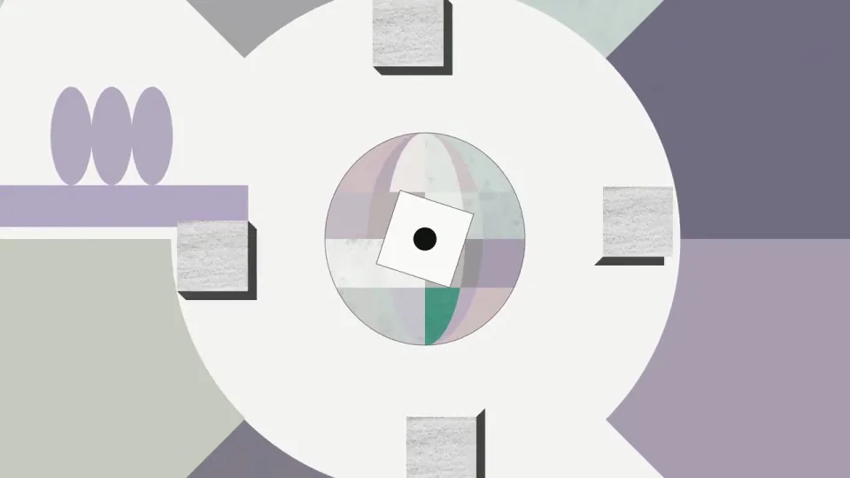
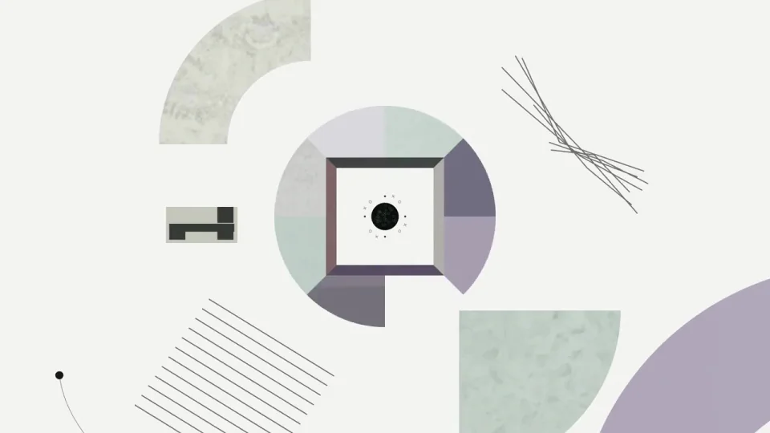
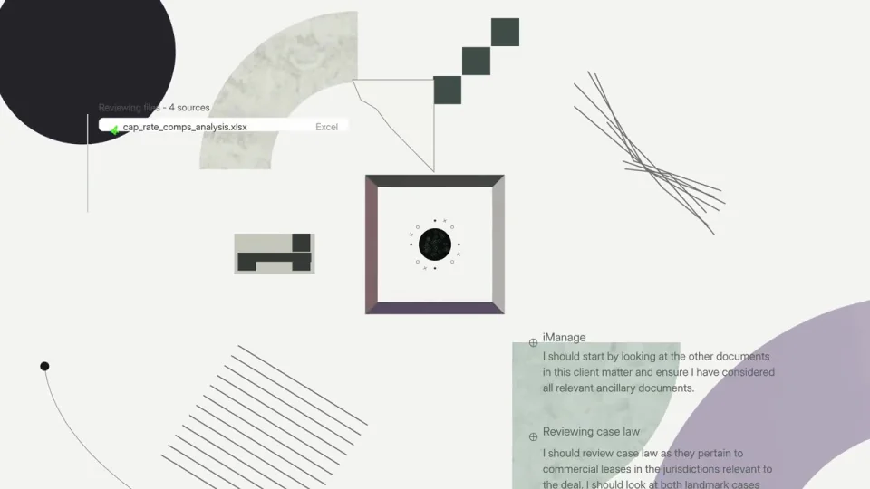

Harvey / V336
研究界面开孔
大椭圆由多个灰紫灰绿块面组成，任务卡靠近中心黑点。整体逐渐缩小，外侧出现白色圆洞，黑点保持在画面中心。
构图与编排 可播放 · 可替换内容
整体编排规则示例
查看 HTML 源码
<!doctype html><html lang="zh-CN"><meta charset="utf-8"><meta name="viewport" content="width=device-width,initial-scale=1"><title>研究界面开孔 · sequence</title><style>html,body{margin:0;width:100%;height:100%;overflow:hidden;background:#f1f1ed}canvas{display:block;width:100%;height:100%;object-fit:contain}</style><body data-mode="sequence"><canvas width="1000" height="600"></canvas><script src="data.js"></script><script src="common.js"></script><script src="scene.js"></script><script src="bridge.js"></script></body></html>画面元素椭圆分区中心黑点白色任务卡方孔资源列表周边几何
MOTION LANGUAGE
动作与构图
局部动作 · 构图规则
01
缩小信息场，保留中心锚点
缩小信息场，保留中心锚点规则示例
查看 HTML 源码
<!doctype html><html lang="zh-CN"><meta charset="utf-8"><meta name="viewport" content="width=device-width,initial-scale=1"><title>研究界面开孔 · sequence</title><style>html,body{margin:0;width:100%;height:100%;overflow:hidden;background:#f1f1ed}canvas{display:block;width:100%;height:100%;object-fit:contain}</style><body data-mode="clip" data-start="0" data-end="3.6"><canvas width="1000" height="600"></canvas><script src="data.js"></script><script src="common.js"></script><script src="scene.js"></script><script src="bridge.js"></script></body></html>大椭圆由多个灰紫灰绿块面组成，任务卡靠近中心黑点。整体逐渐缩小，外侧出现白色圆洞，黑点保持在画面中心。
02
由空间拼贴转成资源关系
椭圆收起后留下方孔，资源列表从旁边进入并以细线关联。周边几何降低密度，为卡片的文字留出白区。
03
更换任务时同步更新卡片关系
替换文档、资源数量和任务短句，保留从较大信息场收成核心，再展开上下文的过程。
SEQUENCE
段落与节奏
点击段落，定位到上方编排示意。






画面参考 · 离散静帧
KEEP THE RELATIONSHIPS
制作其他主题
- 可用于研究、知识或文件聚合，中心对象和关联卡需语义一致。
制作约束
椭圆分区 / 中心黑点 / 白色任务卡 / 方孔 / 资源列表 / 周边几何
- 大椭圆由多个灰紫灰绿块面组成，任务卡靠近中心黑点。整体逐渐缩小，外侧出现白色圆洞，黑点保持在画面中心。
- 椭圆收起后留下方孔，资源列表从旁边进入并以细线关联。周边几何降低密度，为卡片的文字留出白区。
- 替换文档、资源数量和任务短句，保留从较大信息场收成核心，再展开上下文的过程。